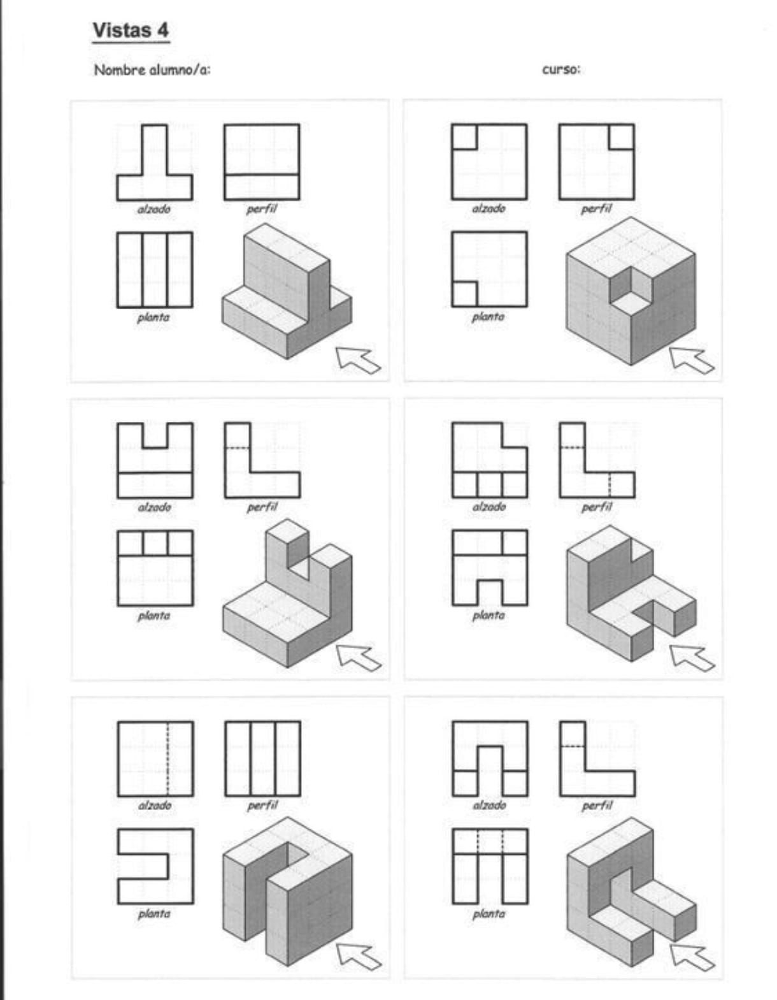
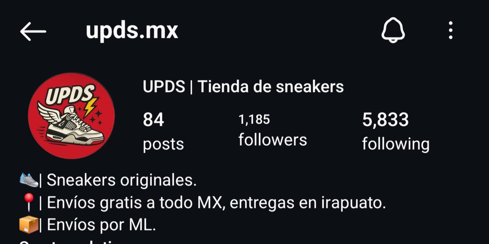

Dibujo Técnico
En esta actividad realizamos la reproducción precisa de un dibujo técnico , aplicando diferentes escalas y utilizando vistas ortogonales como la frontal, superior y lateral. El objetivo fue interpretar correctamente las proporciones y relaciones espaciales de la pieza, desarrollando habilidades clave para representar objetos tridimensionales en un formato bidimensional. Esta actividad fortalece la competencia de innovación, diseño y resolución de problemas, ya que al trabajar con escalas y distintas perspectivas, aprendimos a visualizar soluciones técnicas, adaptar información gráfica a distintos contextos y mejorar nuestra capacidad de análisis espacial y atención al detalle.
La reincorporación de esquilmos al suelo

En este proyecto analizamos el problema ambiental de la quema de esquilmos, investigando tanto sus causas como sus efectos en la salud, el aire y la biodiversidad. A partir del análisis de datos cualitativos y cuantitativos, propusimos soluciones alternativas, como el compostaje, la reutilización y técnicas sostenibles. Esta actividad se vincula con la competencia de innovación, diseño y resolución de problemas, ya que nos permitió aplicar el pensamiento crítico, desarrollar propuestas creativas y plantear estrategias viables ante una problemática real en el contexto local.
Feria del emprendedor: UPDS
Durante la Feria del Emprendedor, desarrollamos una propuesta de negocio centrada en una página web para la venta de sneakers, llamada "UPDS". Aplicamos herramientas digitales, diseño web y estrategias comerciales. Esta actividad se vincula con la competencia de innovación, diseño y resolución de problemas, al poner en práctica habilidades creativas y técnicas para resolver necesidades reales del mercado.